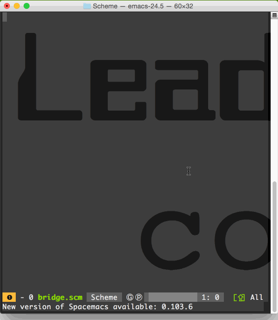

Next page Previous page Page 3 of 4
I'm marrying Rails
< 8 Oct 2015>
I don’t know why, but … I guess I DO know why, it just doesn’t really stick.
Learning to code is partly frustrating because there are so many things I don’t know and yet, I’m supposed to focus my energy and narrow my coding direction to something...
Adding Gifs to your posts
< 5 Sep 2015>

This is my first gif ever and I’m really excited about how easy it is.
I was on codenewbie’s slack and found a really cool desktop window to gif app through @nadiab.
I was actually looking at her post on Git/GitHub and saw how easy it was to follow...
Making Files with the Bash terminal, for Newbies with Macs
<31 Aug 2015>
For those who don’t use the command line:
Try this out and if it isn’t floating your boat, it’s all good to jump ship and probably give it a shot further down the line.
Objective:
create files with the Bash terminal
Main commands:
- ls = “list...
Learn Beginner Web Development by starting your own blog
<28 Aug 2015>
There are a ton of blogging software options for coders these days: Wordpress, Blogger, and ummmm, I don’t really know the list because I don’t use these things that much, feel free to look them up. I thought I’d make a tutorial for beginners to not...
POODR Ch 2 practice
<27 Aug 2015>
Train of thought for POODR Ch 2
friend wants a calculator for gears:
- ratio = chainring / cog
- implement Gear.new(52, 11).ratio
class Gear
attr_reader :chainring, :cog
def initialize( chainring, cog)
@chainring...
POODR Ch 2
<27 Aug 2015>
Notes from POODR Ch 2 for CodeNewbies
this is for study purposes only, excerpts from POODR are not my work.
Initially, ratio method is made for Gear class.
class Gear
attr_reader :chainring, :cog
def initialize( chainring, cog)
@chainring...Simply Scheme 9.4 is a Doosey
<25 Aug 2015>
Man, I just finished this problem with simply scheme:
9.4 The following program doesn’t work. Why not? Fix it.
(define (who sent)
(every describe ‘(pete roger john keith)))
(define (describe person)
(se person sent))
It’s supposed...
POODR Ch 3
<24 Aug 2015>
There are some concepts and information checks I put together for POODR book club with CodeNewbies. Feel free to try out the concept checks.
1.) First concept from POODR Ch 3
Dependency Injection
class Customer
attr_reader :money, :bread, :meatAugust Lean UnConference
<20 Aug 2015>
I’ve the opportunity to be in Silicon Valley for the months of August and September, and along with spending time with family, I’m going to meet up groups and meeting a lot of people in the tech community. One meetup group that I found interesting...
Looking for Code Love
<14 Aug 2015>
Semi-Fictional Account of learning to code on your own. (Some names have been changed to protect the characters of this post)
Me and Hal
I’ve been working on learning Rails for over a year now, and up until this point I haven’t had much interaction...
Next page Previous page Page 3 of 4